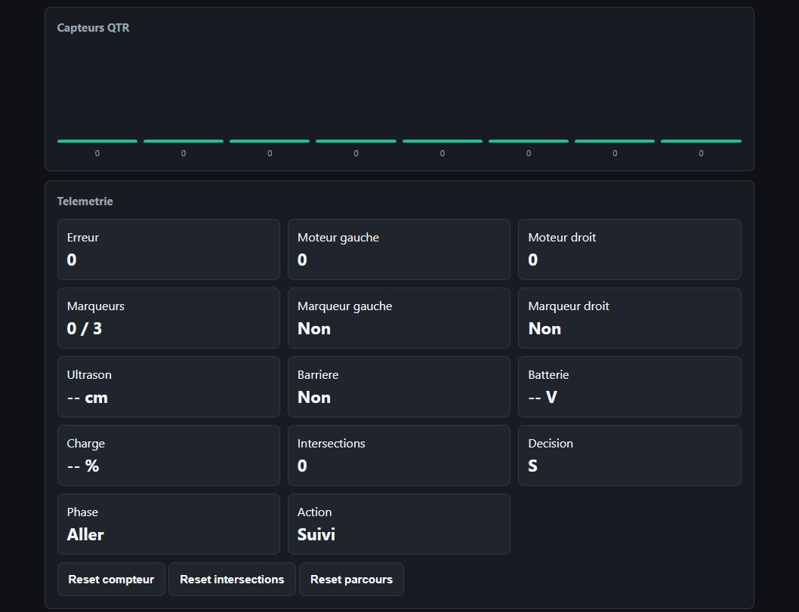

1. Lecture QTR
La fonction readLineBlack() donne une position entre 0 et 7000. La valeur 3500 correspond au centre du robot.
Le programme transforme les valeurs des capteurs en correction moteur, puis ajoute des comportements specifiques pour chaque challenge.
La fonction readLineBlack() donne une position entre 0 et 7000. La valeur 3500 correspond au centre du robot.
L'erreur est calculee par rapport au centre. KP corrige l'ecart et KD limite les oscillations.
Le L298N recoit deux vitesses PWM : une pour le moteur gauche et une pour le moteur droit.
Les capteurs extremes detectent les tirets lateraux, utilises pour compter les etapes, changer de vitesse ou declencher une pause.
Une intersection est detectee lorsque plusieurs capteurs voient du noir en meme temps. Le robot peut alors suivre une sequence de directions.
Le capteur detecte la barriere. Le robot pousse, puis il s'arrete quand la barriere n'est plus devant lui.
position = qtr.readLineBlack(capteurs)
erreur = position - 3500
correction = KP * erreur + KD * variation
vitesseGauche = vitesseBase + correction
vitesseDroite = vitesseBase - correctionL'ESP32 fonctionne en point d'acces Wi-Fi. La page web permet de regler le robot pendant les essais sans brancher l'ordinateur.

Suivi de ligne avec PID et moteurs L298N.
Ajout des reglages en temps reel et de la telemetrie.
Gestion des intersections, marqueurs, variation de vitesse et arrivee par ultrason.